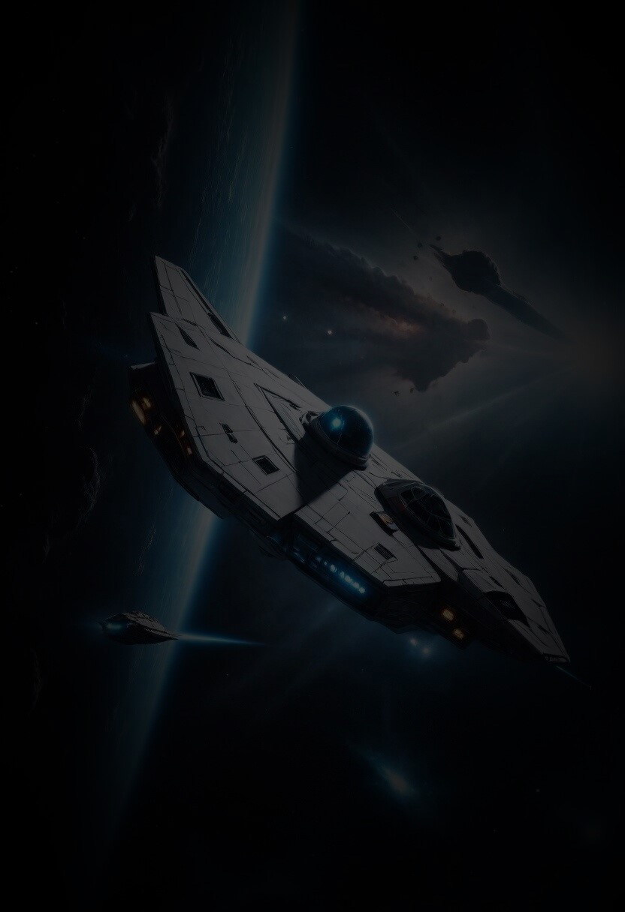

A StarGaze tem como uma de suas missões explorar planetas
habitáveis e estudar recursos estratégicos na Via Láctea e
Andrômeda. Fundada para ajudar e proteger os humanos e aliados da Via Láctea e Andrômeda, tem
por fim
aniquilar os Aeridians, que ambicionam dominar ambas as galáxias.
Missões
ATLAS II
Estabeleceu base avançada para estudar anomalias gravitacionais no sistema
estelar Zelphyr, na borda de Andrômeda, usada para investigar fenômenos cósmicos
entre Andrômeda e a Via Láctea.
15/05/2121
Finalizada
MORPHEUS X
Destruir o planeta "Nova Aetheris", pertencente à civilização dos Aeridians,
inimigos da raça humana e dos aliados da Via Láctea e de Andromeda desde a
aniquilação da raça Seraphimiana.
21/02/2124
Em andamento
PLUTUS IV
Infiltrar-se na base principal dos Aeridians, a raça expansionista que visa
conquistar Andrômeda e a Via Láctea, e desativar
o
gerador de campo de energia que protege sua frota de invasão.
27/12/2125
Agendada

ATLAS II
Lançamento: 15/05/2121
Estado: Finalizada
Duração: 3 anos
Destino: Zelphyr
Carga útil: Infraestutural
Custo: $2.529.300,89
A StarGaze estabeleceu uma base avançada no sistema estelar Zelphyr, na borda da galáxia de
Andrômeda, com o propósito específico de estudar e investigar anomalias gravitacionais que
ocorrem na região limítrofe entre Andrômeda e a Via Láctea. Essas anomalias são de
particular interesse devido ao seu potencial para revelar os segredos da interação entre as
duas galáxias e os fenômenos cósmicos que ocorrem em suas fronteiras.
Pesquisa Aprofundada de Anomalias Gravitacionais: A base avançada em
Zelphyr concentra seus esforços na coleta de dados detalhados sobre as anomalias
gravitacionais presentes na região.
Modelagem e Simulação Avançada: Utilizando os dados coletados, os
cientistas da StarGaze realizam modelagem e simulação avançadas para compreender melhor
a
natureza e a origem das anomalias gravitacionais.
Exploração de Wormholes e Pontes de Einstein-Rosen: A presença de
anomalias gravitacionais na região sugere a possibilidade da existência de wormholes
(buracos de minhoca) e pontes de Einstein-Rosen.